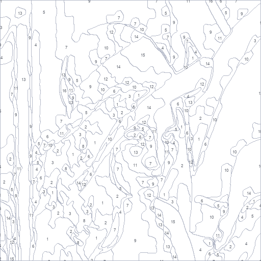

Strokemap
Turn any image into a print-ready paint-by-numbers PDF, with a numbered template, clean outlines, a colorized preview, and a palette sheet.


What you get
One command produces a four-page PDF:
- Numbered template to paint on
- Clean outlines without numbers
- Colorized preview of the finished result
- Color palette sheet that maps each number to a color
How it works
- Superpixel segmentation (SLIC) splits the image into coherent regions.
- Color quantization reduces the image to a small, paintable palette.
- Detail reduction and region merging remove areas too small to paint.
- Outline extraction draws crisp region borders.
- Optimal label placement puts each number where it fits inside its region.
Usage
Use the CLI with an input image and output PDF, and tune the result with --colors and --difficulty. From Python, use PaintByNumbersGenerator or generate_pdf.
At a glance
| Language | Python 3.10+ |
|---|---|
| Built with | NumPy, Pillow, OpenCV, scikit-learn, scikit-image, ReportLab |
| Interfaces | Command line and Python API |
| License | MIT |